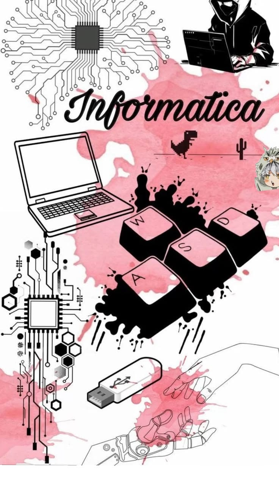
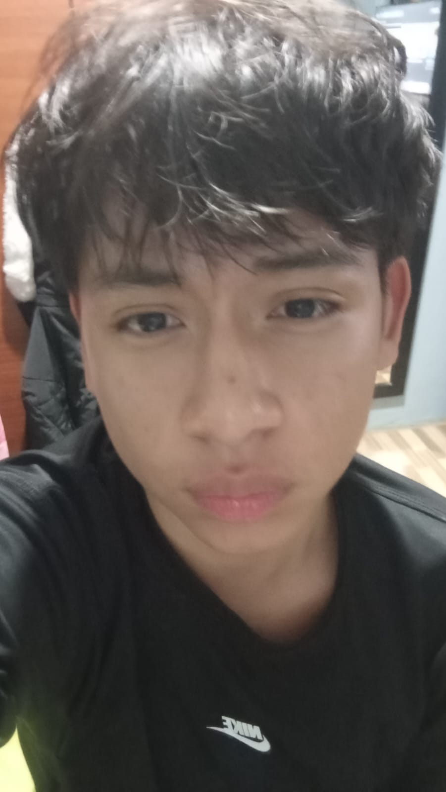

Me he destacado como una persona responsable, puntual y comprometida con el estudio; tengo experiencia en sistemas e informática. Busco aportar al crecimiento con mis estudios y seguir adquiriendo nuevos conocimientos.
DCA Y SISTEMA
marzo 2026
INGLES
octubre 2026
U.E.F DOMINGO FAUSTINO SARMIENTO
(2015 - 2021)
U.E.F LOS SHYRIS
(2021 - ACTUAL)